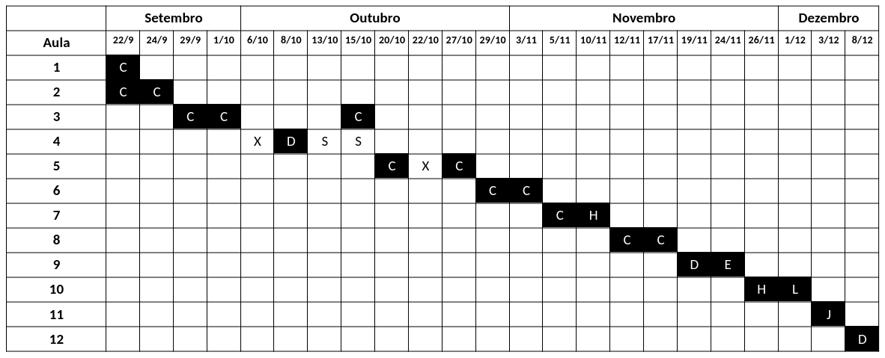

MET 563-3
Site do curso "Introdução à Assimilação de Dados (MET 563-3)" do Programa de Pós-Graduação em Meteorologia (PGMET) do INPE.
Horário das Aulas
- 🗓️ Segundas e quartas-feiras, das 14h30 às 16h30.
Repositório do Curso
Assuntos
1. Apresentação da Disciplina
2. Motivação
- Equação de Análise Empírica: Por que a assimilação de dados fornece uma estimativa ótima?
Atividades
- 🎲 Atividade 1: Equação de Análise Empírica Univariada - Google Colab | Repositório
- 🎲 Atividade 2: Equação de Análise Empírica Multivariada - Google Colab | Repositório
3. Histórico da Assimilação de Dados
- Revisão do histórico da assimilação de dados e das motivações para o seu desenvolvimento, passando pelos métodos de análise empíricos de Bergthórsson e Döös (1959) e Cressman (1955) - Método de Correções Sucessivas e Gandin (1963) - Interpolação Ótima
Leitura Complementar
- Livro - Richardson, 1922: Weather Prediction by Numerical Process
- Artigo - Panofsky, 1949: Objective Weather Map Analysis
- Artigo - Bergthórsson e Döös, 1955: Numerical Weather Map Analysis
- Artigo - Cressman, 1959: An Operational Objective Analysis System
- Livro - Gandin, 1963: Objective Analysis of Meteorological Fields
- Review - Gandin, 1963: Objective Analysis of Meteorological Fields
- Post - Lynch, 2015: Richardson’s Fantastic Forecast Factory
- Webpage - NOAA Teletypes
- Wikipedia - IBM 704
- Wikipedia - Baudot Code
Atividades
- 🎲 Atividade 3: Análise de Bergthórsson e Döös (1955) - Google Colab | Repositório
- 🎲 Atividade 4: Análise de Cressman (1959) - Google Colab | Repositório
- 🎲 Atividade 5: Análise de Gandin (1963) - Google Colab | Repositório
4. O Sistema Global de Observações Meteorológicas
- O que é o Sistema Global de Observações Meteorlógicas
- Os diferentes tipos de observações (in situ, por sensoriamento remoto e plataformas oceânicas)
- O fluxo de dados operacional no CPTEC para a Assimilação de Dados
-
Controle de Qualidade das Observações
-
👉 Aula 5 - PDF
Leitura Complementar
- WMO - Global Observing System (GOS)
- Newsletter ECMWF - How to evolve global observing systems
- Wikipedia - Global Climate Observing System
5. Método Variacional
- Cálculo variacional
- Revisão de Álgebra Linear (Operações com Matrizes)
-
Introdução do método 3DVar
- Histórico e desenvolvimento
- Características principais
- PSAS
- FGAT
-
Componentes
- Método de minimização da função custo do 3DVar
- Matriz de Covariâncias dos Erros de Previsão
- Modelo de Transferência Radiativa
- Controle de Qualidade
- Visão geral sobre o método 4DVar
- Atividades realizadas no CPTEC com o método 3DVar
Leitura Complementar
- RMetS - Analysis methods for numerical weather prediction
- ECMWF - Variational Data Assimilation: Theory and Overview
- ECMWF - Assimilation techniques (3): 3dVar
- JMSJ - Unified Notation for Data Assimilation: Operational, Sequential and Variational
6. Métodos Baseados em Conjuntos (EnKF et al.)
- Introdução ao método EnKF
- Histórico e desenvolvimento
- Características principais
- Inflation e Localization
- Visão geral sobre os esquemas derivados
- Atividades realizadas no CPTEC com o método LETKF
7. Métodos Híbridos (Ensemble-Variacional)
- Introdução ao método híbrido ensemble-variacional 3DEnVar
- Histórico e desenvolvimento
- Características principais
- Atividades realizadas no CPTEC com o método ensemble-variacional 3DEnVar
8. Frameworks de Assimilação de Dados
- Apresentação dos principais frameworks abertos para a assimilação de dados operacional: GSI e JEDI
- Paradigmas de desenvolvimento do JEDI
- Atividades realizadas no CPTEC com o GSI e JEDI
9. Assimilação de Dados Regional
- Apresentação sobre as particularidades de um sistema de assimilação de dados regional
- Assimilação de Dados de Radar
- Desenvolvimentos realizados no CPTEC
10. Impacto e Experimentos de Sistemas Observacionais
- Visão geral sobre a metodologia e a ferramenta para o estudo de impacto das observações empregada no sistema de assimilação de dados do CPTEC
- Impacto da Assimilação das Observações
- Observing System Experiment (OSE) e Observing System Simulation Experiment (OSSE)
11. Assimilação de Dados de Superfície
- Apresentação sobre a assimilação de dados de superfície, seus impactos e desafios
- Desenvolvimentos realizados no CPTEC
12. Reanálises
- O que é reanálise
- Reanálise como ferramenta de validação de modelos numéricos
- Desenvolvimentos realizados no CPTEC com reanálise regional
Cronograma de Aulas

Legenda:
- X: não houve aula
- S: Seminários dos alunos
- C: Aula Carlos
- D: Aula Dirceu
- E: Aula Éder
- H: Aula Helena
- J: Aula João
- L: Aula Liviany